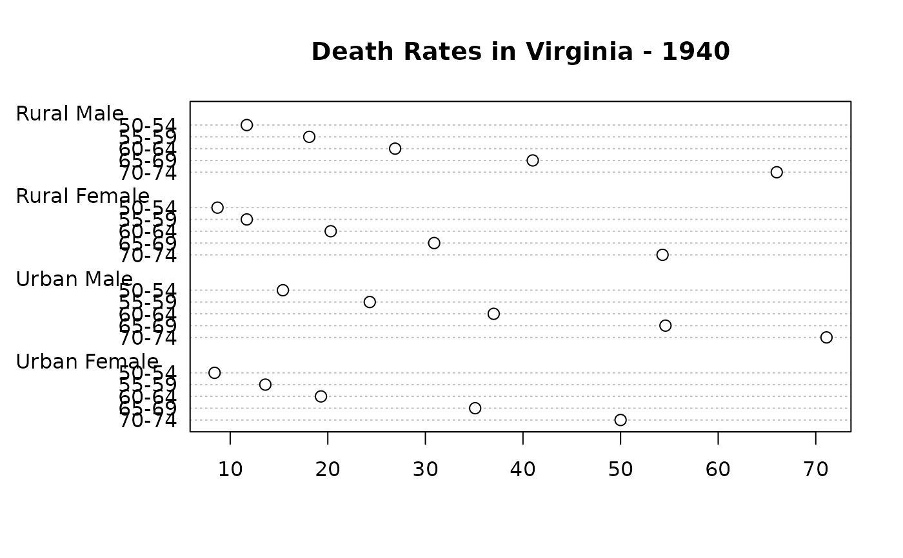
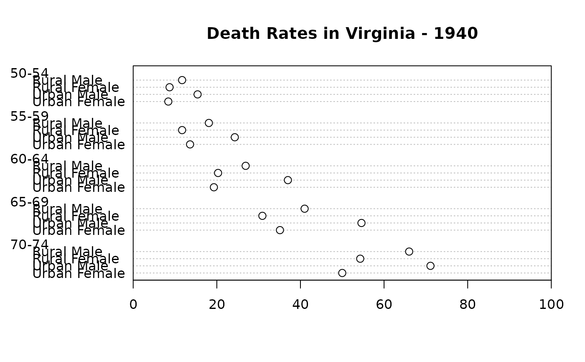
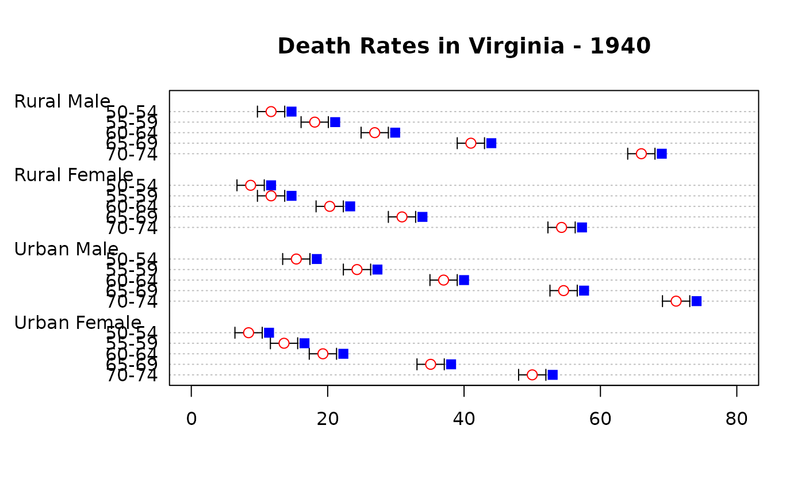
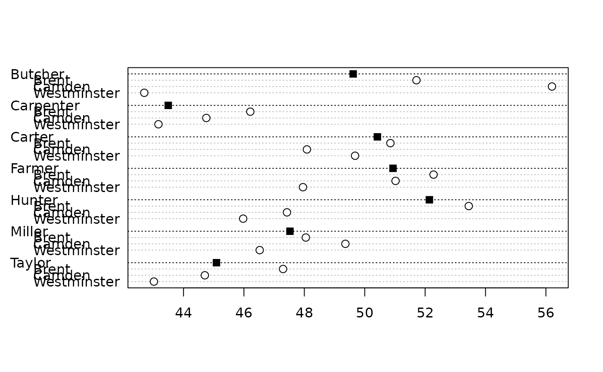
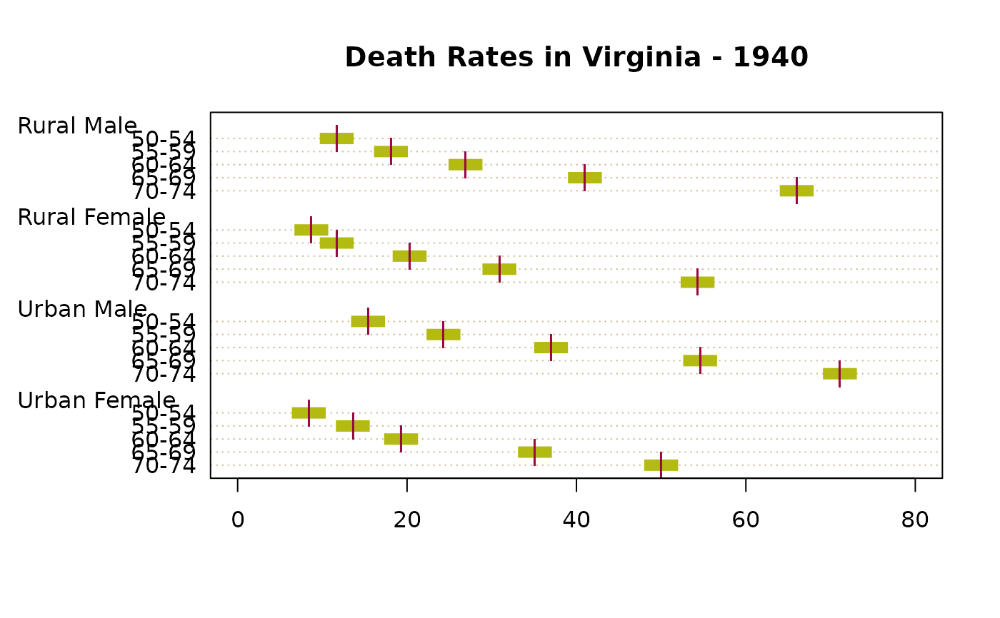
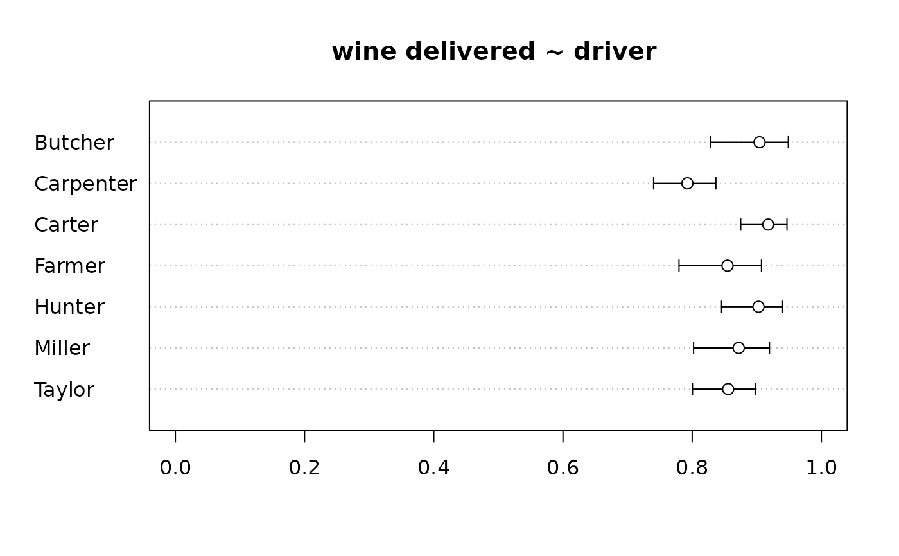
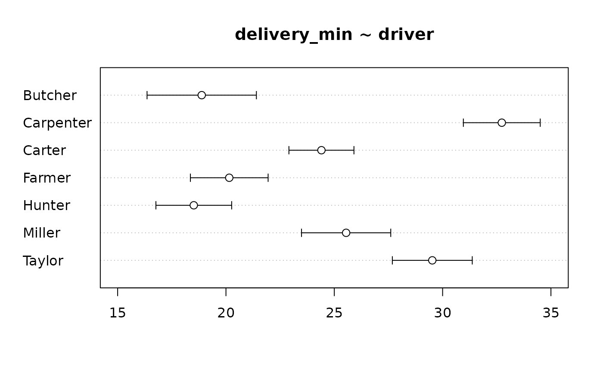
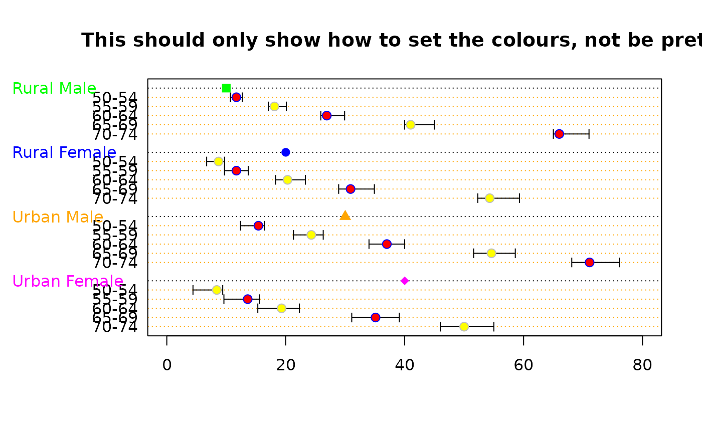

PlotDot.RdDraw a Cleveland dot plot. This is an extended version of dotchart with an added option for error bars, an add argument and several more options. PlotCI() is a small helpfunction to facilitate ci-plots of several models.
PlotDot(x, labels = NULL, groups = NULL, gdata = NULL,
cex = par("cex"), pch = 21, gpch = 21, bg = par("bg"),
color = par("fg"), gcolor = par("fg"), lcolor = "gray", lblcolor = par("fg"),
xlim = NULL, main = NULL, xlab = NULL, ylab = NULL,
xaxt = NULL, yaxt = NULL, add = FALSE, args.errbars = NULL,
cex.axis = par("cex.axis"), cex.pch = 1.2, cex.gpch = 1.2,
gshift = 2, automar = TRUE, ...)
PlotDotCI(..., grp = 1, cex = par("cex"),
pch = 21, gpch = 21, bg = par("bg"), color = par("fg"), gcolor = par("fg"),
lcolor = "gray", lblcolor = par("fg"), xlim = NULL, main = NULL,
xlab = NULL, ylab = NULL, xaxt = NULL, yaxt = NULL,
cex.axis = par("cex.axis"), cex.pch = 1.2, cex.gpch = 1.2,
gshift = 2, automar = TRUE)either a vector or matrix of numeric values (NAs are
allowed). If x is a matrix the overall plot consists of
juxtaposed dotplots for each row. Inputs which satisfy
is.numeric(x) but not
is.vector(x) || is.matrix(x) are coerced by
as.numeric, with a warning.
a vector of labels for each point.
For vectors the default is to use names(x) and for matrices
the row labels dimnames(x)[[1]].
an optional factor indicating how the elements of
x are grouped.
If x is a matrix, groups will default to the columns
of x.
data values for the groups. This is typically a summary such as the median or mean of each group.
the character size to be used. Setting cex
to a value smaller than one can be a useful way of avoiding label
overlap. Unlike many other graphics functions, this sets the actual
size, not a multiple of par("cex").
the plotting character or symbol to be used. Default is 21.
the plotting character or symbol to be used for group values.
the background color of plotting characters or symbols to be
used; use par(bg= *) to set the background color of
the whole plot.
the color(s) to be used for points and labels.
the single color to be used for group labels and values.
the color(s) to be used for the horizontal lines.
the color(s) to be used for labels.
horizontal range for the plot, see
plot.window, e.g.
overall title for the plot, see title.
axis annotations as in title.
a character which specifies the x axis type. Specifying "n" suppresses plotting of the axis.
a character which specifies the y axis type. Specifying "n" suppresses plotting of the axis.
logical specifying if bars should be added to an already existing plot; defaults to FALSE.
optional arguments for adding error bars. All arguments for ErrBars can be supplied. If left to NULL (default), no error bars will be plotted.
The magnification to be used for axis annotation relative to the current setting of cex.
The magnification to be used for plot symbols relative to the current setting of cex.
The magnification to be used for group symbols relative to the current setting of cex.
the number of characters, for which the grouplabels should be shift to the left compared to the sublabels.
logical (default TRUE), defining if the left margin should be set according to the width of the given labels, resp. grouplabels. If set to FALSE the margins are taken from par("mar").
graphical parameters can also be specified as arguments.
an integer, defining if the the coefficients should be grouped along the first or the second dimension (default is 1).
Dot plots are a reasonable substitute for bar plots. This function is invoked to produce dotplots as described in Cleveland (1985).
For PlotDotCI() the dots are a list of matrices with 3 columns, whereas the first is the coefficent, the second the lower and the third the upper end of the confidence interval.
Return the y-values used for plotting.
dotchart, PlotDotCI
Becker, R. A., Chambers, J. M. and Wilks, A. R. (1988) The New S Language. Wadsworth & Brooks/Cole.
Cleveland, W. S. (1985) The Elements of Graphing Data. Monterey, CA: Wadsworth.
Murrell, P. (2005) R Graphics. Chapman & Hall/CRC Press.
PlotDot(VADeaths, main = "Death Rates in Virginia - 1940")

op <- par(xaxs = "i") # 0 -- 100%
PlotDot(t(VADeaths), xlim = c(0,100),
main = "Death Rates in Virginia - 1940")

par(op)
# add some error bars
PlotDot(VADeaths, main="Death Rates in Virginia - 1940", col="red", pch=21,
args.errbars = list(from=VADeaths-2, to=VADeaths+2, mid=VADeaths,
cex=1.4))
# add some other values
PlotDot(VADeaths+3, pch=15, col="blue", add=TRUE)

# same as PlotDotCI
xci <- do.call(rbind, tapply( d.pizza$delivery_min, d.pizza$driver,
MeanCI, conf.level=0.99, na.rm=TRUE))
PlotDot(xci[,1], main="delivery_min ~ driver", pch=21, bg="grey80", col="black",
args.errbars = list(from=xci[,2], to=xci[,3], mid=xci[,1], lwd=2, col="grey40", cex=1.5),
xlim=c(15,35), panel.before=grid())
#> Warning: "panel.before" is not a graphical parameter
#> Warning: "panel.before" is not a graphical parameter
# with group data
x <- with(d.pizza, tapply(temperature, list(area, driver), mean, na.rm=TRUE))
PlotDot(x, gdata = tapply(d.pizza$temperature, d.pizza$driver, mean, na.rm=TRUE),
gpch = 15)

# special format
par(lend=1)
PlotDot(VADeaths, main="Death Rates in Virginia - 1940", pch="|",
lcolor = DescTools::hecru, col=DescTools::hred,
args.errbars = list(from=VADeaths-2, to=VADeaths+2, mid=VADeaths,
cex=1.3, lwd=8, code=0, col=DescTools::hgreen))

# Error bars for binomial confidence intervals
tab <- table(d.pizza$driver, d.pizza$wine_delivered)
xci <- SetNames(BinomCI(tab[,1], rowSums(tab)), rownames=rownames(tab))
PlotDot(xci[,1], main="wine delivered ~ driver ", xlim=c(0,1),
args.errbars=list(from=xci[,-1], mid=xci[,1], pch=21))

# Error bars for confidence intervals for means
xci <- do.call(rbind, tapply(d.pizza$delivery_min, d.pizza$driver,
MeanCI, conf.level=0.99, na.rm=TRUE))
PlotDot(xci[, 1], main="delivery_min ~ driver", args.errbars=list(from=xci))

# Setting the colours
# define some error bars first
lci <- sweep(x = VADeaths, MARGIN = 2, FUN = "-", 1:4)
uci <- sweep(x = VADeaths, MARGIN = 1, FUN = "+", 1:5)
PlotDot(VADeaths, main="This should only show how to set the colours, not be pretty",
pch=21, col=c("blue","grey"), bg=c("red", "yellow"),
gcolor = c("green", "blue", "orange", "magenta"), gdata=c(10,20,30,40),
gpch = c(15:18), lcolor = "orange",
args.errbars = list(from=lci, to=uci, mid=VADeaths, cex=1.4))
